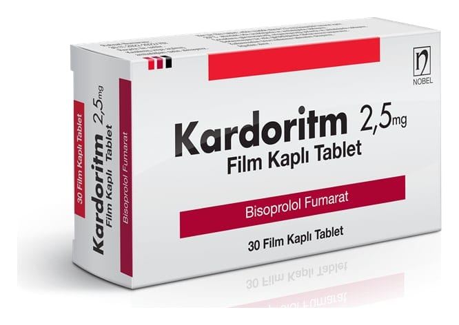

Kardoritm 2,5 mg Film Kaplı Tablet , 30 Adet

Ne için kullanılır
KT · Bölüm 1KARDORİTM, 30 adet tablet içeren blister ambalajlarda takdim edilmektedir. Tabletler beyaz renkli, yuvarlak, bombeli ve iki eşit parçaya bölünebilir şekilde tek çentiklidir. Her bir film kaplı tablet, 2,5 mg bisoprolol fumarat içerir.
KARDORİTM, kalbin atım hızını düşürerek kalbin kanı daha etkin pompalamasını sağlamaya ve yüksek kan basıncının kontrol edilmesine yardımcı olan beta-blokör içerir.
KARDORİTM; yüksek tansiyonun/kan basıncının düşürülmesinde (hipertansiyon), kalbin beslenmesinin bozulduğu bazı koroner kalp hastalıklarında, kalbin fonksiyonunun azaldığı kalp yetersizliği olarak tanımlanan durumlarda ve bir kalp ritm bozukluğu olan atriyal fibrilasyonda (Preeksitasyon eşlik eden durumlar hariç) kalp hızının azaltılması için kullanılır.